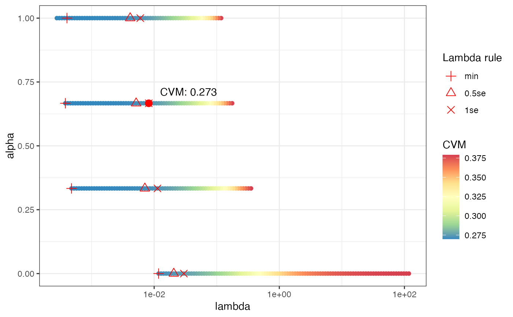
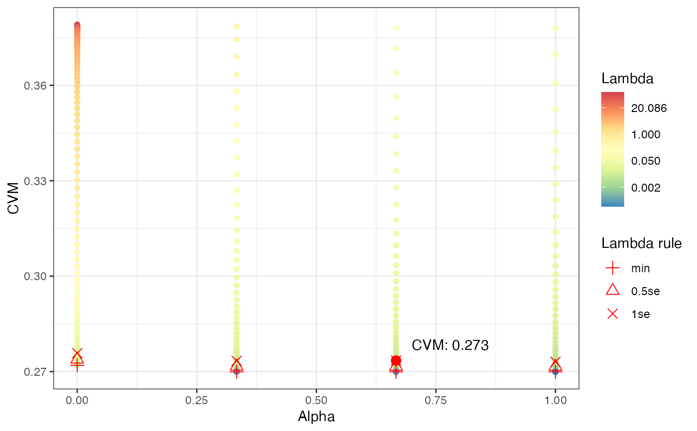

reg_logreg.RdStandardized interface for self-tuning regularized logistic regression.
reg_logreg(x, y, folds = 5, alpha_n = 3, cost = "mse", lambda = "1se")
| x | Data frame with features. |
|---|---|
| y | Binary vector indicating outcome event. |
| folds | Number of folds to use for CV tuning |
| alpha_n | Number of alpha values to sample for CV tuning |
| cost | Cost measure to use, see |
| lambda | Decision rule to pick lambda, one of "min", "1se", "0.5se" |
Tuning is performed using cross-validation with glmnet::cv.glmnet().
Both lambda and alpha values are tuned. The lambda values are left to the
model default and a uniform grid of alpha values is used. The lambda value
is picked with glmnet::cv.glmnet()'s more robust 1se value (i.e. not the
absolute minimum, but closest value within 1 SD of the minimum value). Then
the globally optimum alpha value is picked.
Other Other base models:
logistic_reg_featx(),
logistic_reg()
library(modeldata) data(credit_data) credit_data <- credit_data[complete.cases(credit_data), ] mdl <- reg_logreg(credit_data[, setdiff(colnames(credit_data), "Status")], credit_data$Status, folds = 5, alpha_n = 4) # plots to review tuning results plot(mdl)#> # A tibble: 6 x 2 #> p_bad p_good #> <dbl> <dbl> #> 1 0.240 0.760 #> 2 0.133 0.867 #> 3 0.498 0.502 #> 4 0.259 0.741 #> 5 0.192 0.808 #> 6 0.0930 0.907